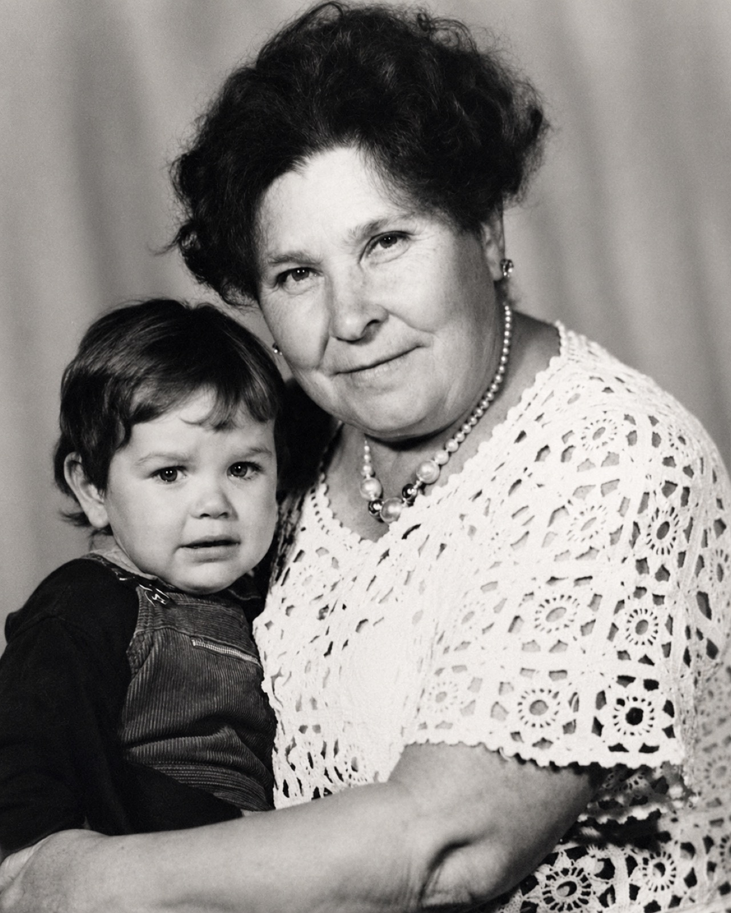
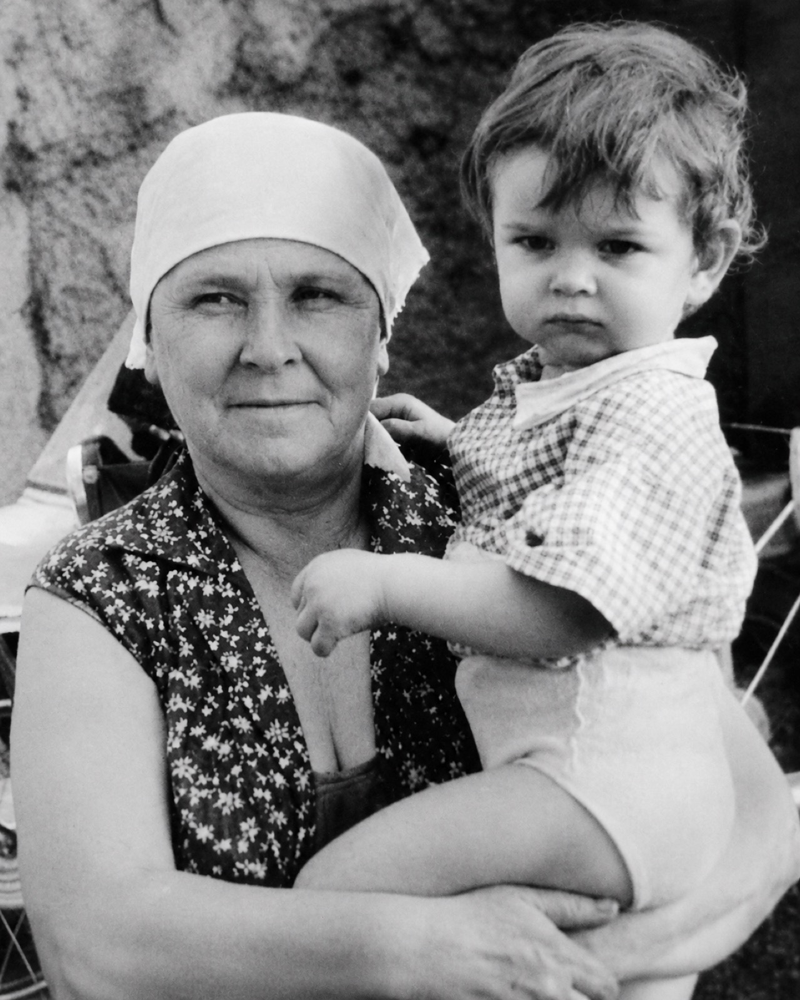
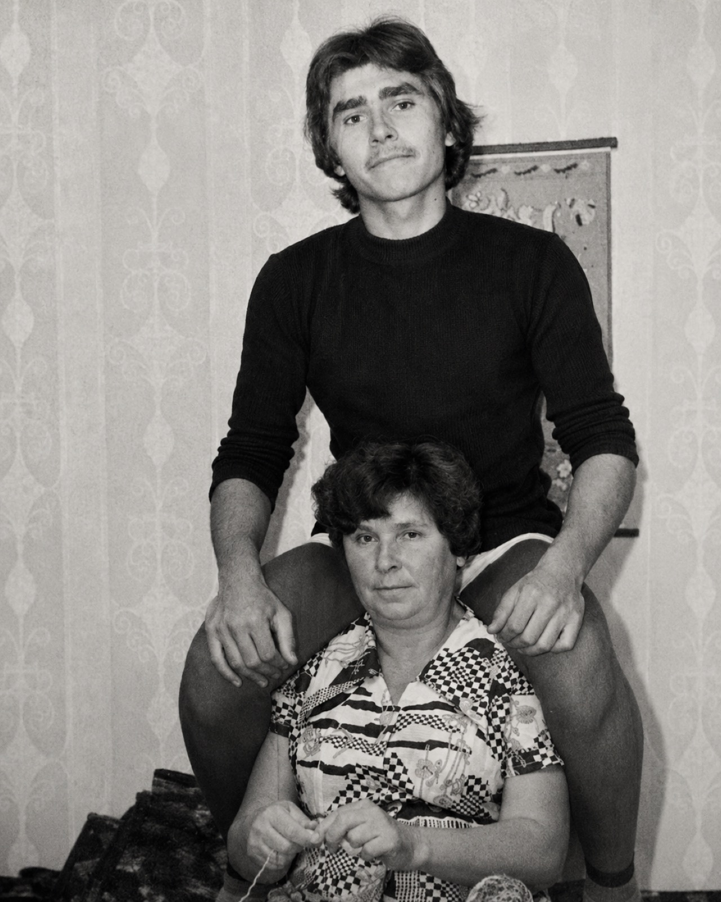
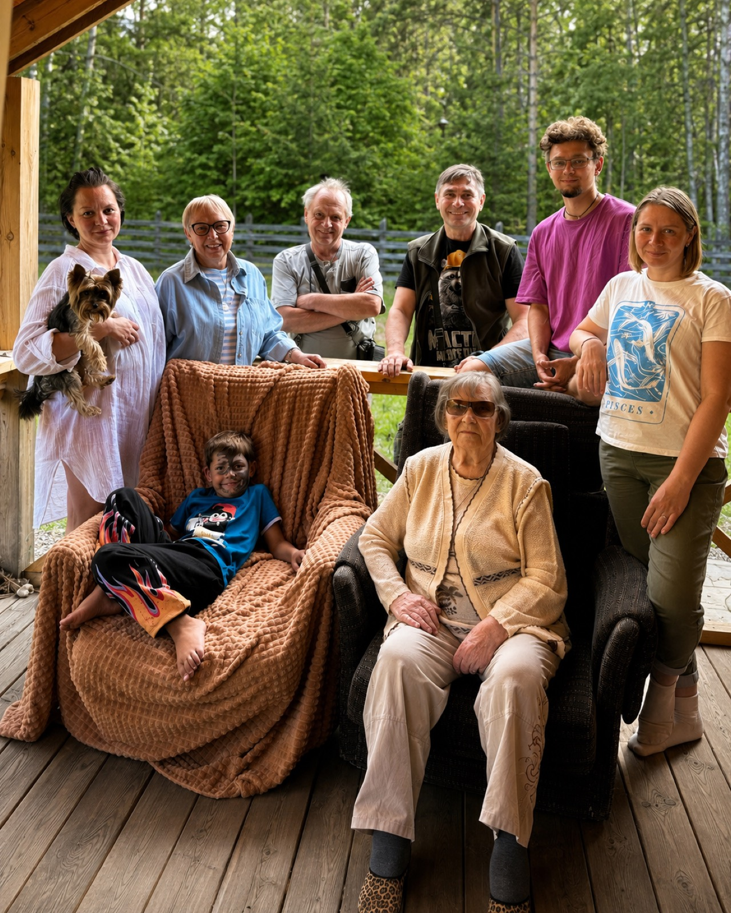
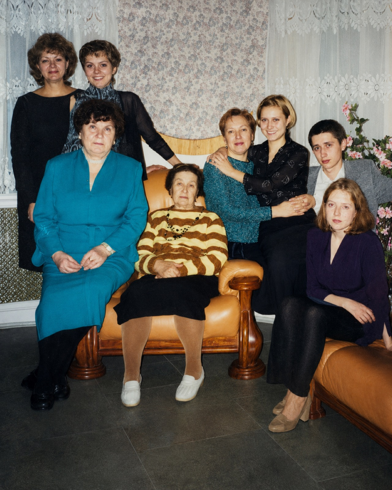

Жизнь, с самого начала связанная с тяжёлой судьбой семьи — ссылкой, бедностью, войной и долгим трудовым путём в Сибири. История стойкости, труда, независимого нрава и очень большой сердечности.

Ванифатий Мартирьевич Перевалов жил в Челябинске и, по семейным рассказам, состоял в политической группе. После ареста группу осудили на вечную каторгу в Сибирь — этапом их гнали пешком до Черемхова. Жёны не пошли за осуждёнными. Кроме одной: Любовь Викторовна отправилась вслед за мужем — пешком, рядом с этапом, с маленькой дочерью Ниной на руках.
«Им присудили вечную каторгу в Сибирь. И вот они из Челябинска шли пешком до Черемхова… Одна мамочка с Ниной на руках шла вместе с этим этапом.»
Когда добрались до Черемхова, легче не стало: семья и другие ссыльные поселились в отстойном вагоне. Позже Ванифатия забрали на военную переподготовку, и он исчез из жизни семьи. Лишь много лет спустя стало известно, что он вернулся в Челябинск, снова женился и работал начальником вокзала. Любовь Викторовна осталась одна поднимать детей.
Из Челябинска на Урале — этапом, пешком, через всю Сибирь — до Черемхова в Прибайкалье. Около 3 500 километров, пройденных вслед за осуждённым мужем с ребёнком на руках.
Маргарита родилась в Черемхове. Детство было очень бедным: мать работала на складе, жилья почти не было — одно время жили в красном уголке, приспособленном помещении с железной печкой посреди комнаты. Уходя на работу, мать оставляла маленькую Маргариту в ванне поближе к теплу, забегала подбросить дров, наспех кормила и снова уходила.
«Мама меня ростила так трудно… а мы в красном уголке жили. У нас не было квартиры.»
У Маргариты было несколько старших сестёр. Семья жила собранно, помогая друг другу. Зоя работала воспитательницей и брала Маргариту с собой на лето к реке — там девочка чуть не утонула и на всю жизнь стала бояться воды. Анна выучилась на бухгалтера и стала заметной фигурой в Тулуне.
«Почему я боюсь до сих пор воды? Я очень боюсь воды.»
В начале войны ей было четырнадцать. Голод стал постоянным фоном жизни: крошечные пайки хлеба, печёная картошка, маленький Игорь, что ночью выковыривал мякиш из спрятанного хлеба. Эти годы она пересказывала не как историю, а как личный опыт времени, когда люди действительно умирали от голода.
«Война шла, голод… С голоду люди умирали, есть нечего было.»
Маргарита работала у Анечки в бухгалтерии. После двенадцатичасовой смены ещё несколько часов перелопачивали зерно на сушилке, чтобы оно не загорелось до посевной. В выходные отправляли в совхозы — полоть, копать картошку, рубить капусту. Подростки и женщины жили в режиме постоянной мобилизации.
«Мы после работы двенадцать часов отработаем… и идём лопатить зерно… получалось четырнадцать-пятнадцать часов в сутки.»
Маргарита росла живой, смелой и своенравной: дралась с мальчишками, могла перепрыгнуть через забор. После выговора на работе она просто уволилась и в 1946 году поступила в горный техникум. Учёба длилась четыре с половиной года — программа была почти институтской.
«Хулиганка была какая-то, я не знаю, вольная такая девчонка.»
После техникума Маргарита пошла работать на шахту. Работа сменная — и днём, и ночью: она принимала вагоны с углём от железнодорожного инспектора и отправляла их дальше по назначению. Так завершился её путь от полуголодной девочки военных лет к специалисту с техническим образованием.
«Закончила я и пошла работать на шахту по сменам… День и ночь работали.»
В отпуске на Мальте состоялась встреча, определившая её судьбу. Валера был старше, прошёл фронт, был ранен в ногу и слегка прихрамывал — но прекрасно танцевал. Он жил в Ангарске, она — в Черемхове; он ездил к ней, они ходили в кино и на танцы. Примерно через год он решил жениться.
«Он фронт прошёл… ножка у него была ранена, он немножко подхрамывал, но танцевал так здорово.»
У Валеры уже был сын Володя от первого брака. Когда мальчика привезли сватать Маргариту, он сразу признал её своей мамой и бросился на руки — три ночи подряд не отпускал от себя. Маргарита приняла его как родного, с теплом и нежностью. В этом — её способность сразу включаться в заботу и семейную близость.
«Мамочка, а почему ты меня на ручки не берёшь?.. И бросился ко мне на руки. Три ночи не отпускал.»


Дальнейшая жизнь была связана с большой разветвлённой семьёй — Маргарита помнила судьбы братьев, сестёр, племянников и детей так подробно, будто всё было вчера. В поздние годы рядом был сын Андрей, которого она звала Андрюшей: он работал, помогал по дому, привозил продукты, поддерживал домашний уклад. Старость проходила не в одиночестве, а внутри живой семейной связи.
Одной из самых трагических историй была судьба племянника Гены, сына Анны. Он служил на флоте, на подводной лодке, а перед этим спас Веру — свою будущую жену, которую родители-сектанты заперли в подвале за вступление в комсомол. У них родилась дочь Оля. Гену перевели на другую лодку для особого задания; лодка погибла в море. Эту потерю Маргарита помнила спустя десятилетия с такой болью, словно случилось совсем недавно.
«И он оказался один на этой чужой лодке… лодку взорвали, и она по частям разлетелась. Вот так вот он погиб.»
Стойкость, трудолюбие, независимый нрав и очень большая сердечность. Она выросла в нужде, пережила войну подростком, много работала, получила образование и создала семью. В её воспоминаниях нет жалобливости: даже самые тяжёлые эпизоды она рассказывает просто, по-деловому, часто с живой интонацией и неожиданной улыбкой.


«Вот такие дела.»